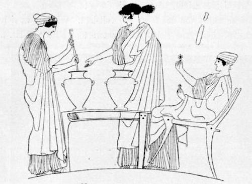
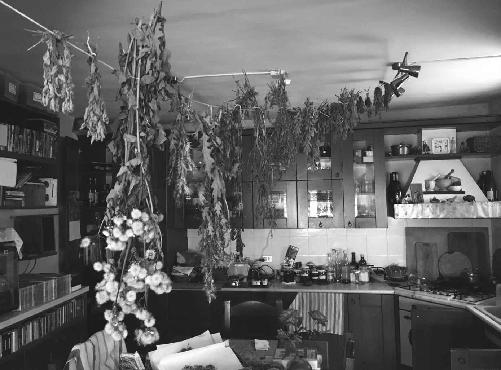
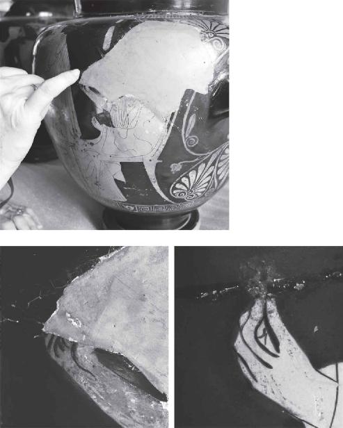
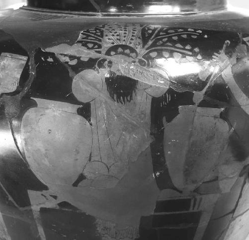

I’m in the shadow of the shimmering glass-and-metal pyramid occupying eleven thousand square feet of the sprawling Cour Napoléon. I begin wading through far fewer visitors than I expected for such a picture-perfect Friday in Paris. Then I remember it’s mid-February, and the recent bout of “yellow vest” protests hasn’t exactly been doing wonders for the tourism sector here in 2019. The antigovernment movement that started over fuel prices has seen the country’s most violent demonstrations since the 1960s, evoking comparisons to the French Revolution. Just a few weeks ago the authorities deployed eighty-nine thousand security personnel across the country.1 In a rare precautionary move, the largest art museum in the world was actually ordered to shut this iconic entrance. Today, however, the streets are quiet. And we’re in luck. Dr. Alexandra Kardianou, the curator of Greek ceramics for the Louvre, has graciously invited me and a special guest to examine two red-figure vases from the fifth century BC. For years I’ve been waiting to see them up close and personal.
If the earliest, Greek-speaking Christians really did inherit a psychedelic sacrament from the initiates of the Mysteries, the relationship had to start somewhere. So to put that pagan continuity hypothesis to the ultimate test, we’re looking for anything that connects the Ancient Greeks of the final centuries BC to the paleo-Christians of the early centuries AD. The obvious link is wine. If Christianity really did base the Eucharist on a mind-altering drink that existed in the classical world at the time of Jesus, then our first task in this part of the investigation is to identify that original Ancient Greek potion. We know the first Christians didn’t traffic in beer. But the discovery of an ergot-infused brew at Mas Castellar de Pontós does show the incredible longevity of graveyard beers on the European continent. If they survived from the Stone Age to the birth of Christianity, and the whole concept of drugged beverages is not just a figment of Ruck’s imagination, then the long tradition of secret ingredients and hidden recipes could have easily found a home among the fans of Dionysus. If Demeter and Persephone’s kukeon was spiked with psychedelic alkaloids, then any wine circulating in the eastern half of the Mediterranean in the centuries leading up to Jesus could have contained any number of plants, herbs, and fungi as well.
But this time around, we’re not necessarily looking for ergot, which has such a unique relationship with grain. We’re looking for anything psychoactive. Because the simple fact is that Greek wine of the era did not remotely resemble anything we would call “wine.” As we’ll soon see, Ruck spends about ten pages of The Road to Eleusis quoting a laundry list of ancient sources to rekindle the very mysterious reputation of the potion that replaced beer as the default sacrament of Western civilization. Among the Ancient Greeks, wine is routinely described as unusually intoxicating, seriously mind-altering, occasionally hallucinogenic, and potentially lethal. In an age before distilled liquor, how was any of that possible? Why was Greek wine so strong? It’s well established that fermentation comes to a sudden halt when the alcoholic content of wine or beer approaches about 15 percent by volume. Most yeast can no longer survive past that natural barrier; they just die off, blocking any further production of the heady ethanol. So something else had to give ancient wine its infamous kick.
According to Ruck, the elixir known as trimma, that special wine mixed for the audience at the Theater of Dionysus we visited on the Acropolis, was only one such example of the Greeks’ psychedelic know-how. “The Greek language did not distinguish between madness and inebriation,” he writes in The Road to Eleusis, “because Dionysus was the god of all inebriants and not of wine alone.”2 Indeed, if the Greeks had been so obsessed with alcohol, surely they would have invented a word for it. But they did not. Unlike the other 60 percent of the English language borrowed from Greek and Latin, our word “alcohol” comes from the Arabic al-kuhl (اَلْكُحْل). The root, kahala, can mean to “enliven” or “refresh.” Like the drinkers of the graveyard beer at Mas Castellar de Pontós, however, the Greeks wanted more than a light buzz. As mentioned earlier, the objective of the maenads or female devotees of Dionysus was the state of “divine frenzy” or “god-possessed inspiration.” Having been “filled with the spirit” of the God of Ecstasy and “acquired his divine powers,” the priestesses became “identified with the god himself.”3 Now that’s some kick-ass wine.

Line drawing of G 409. From Lenäenvasen, by August Frickenhaus, published in 1912.
In order to share in the divinity of Dionysus and become immortals themselves, the maenads could have mixed any number of psychedelic additives into their grape potion. From the textual evidence, it’s clear they had an arsenal of drugs up their sleeves. But it was one of Ruck’s classic unreadable footnotes that always haunted me. In that minuscule font from his 1978 bombshell, the old professor briefly mentions some ancient pottery depicting the ritual mixing of sacred wine. Every January in Athens, another elixir like trimma would be prepared for the midwinter celebration known as the Lenaia festival. It marked the nativity of Dionysus and the beginning of his party season. As with all such Mysteries, details are sketchy, but Ruck thought tantalizing clues were recorded on the better-preserved examples of Greek pottery:
These vases show the female devotees of the god in ecstatic or maddened states of mind as they mix the wine in a krater or “mixing bowl” on a table behind which stands the masked pillar of the god. On the table or strung beneath it are various plants and herbs. One vase actually shows a woman adding a sprig of some herb to the krater.4
And that’s where the pre-internet footnote ends. No pictures, no graphics, no hyperlinks. Without indicating a specific page, Ruck did cite the German scholar August Frickenhaus’s Lenaevasen, published in Berlin in 1912. At some point the University of Heidelberg made a digitized copy freely available online.5 I can still clearly remember spending an entire Sunday, several years ago, studying every single image reproduced by Frickenhaus and hoping to track down whatever Ruck was talking about. All the pottery is disappointingly reproduced in black and white. Some are photographs of the actual vases in question; others, the esteemed German’s best attempt at re-creating the Lenaia scenes by hand.
There was one illustration by Frickenhaus that really grabbed my attention: three women in profile, flanking two kraters on a mixing table. Two of the women are standing, gazing intently into the vessel on the left. The central figure extends her right hand palm up to the krater’s open lip, while her accomplice delicately stirs the contents with an elongated dipper. Some unknown ingredient has just been tossed into the still-fermenting wine. The likely additive: whatever the third woman, seated to the right, rigidly brandishes in both hands. She’s holding two different species. Neither is readily identifiable, but either could fit the “sprig of some herb,” exactly as Ruck described. Under his careful line drawing, Frickenhaus included the phrase “Louvre G 409” in parentheses, which I guessed was a hundred-year-old inventory number that probably didn’t mean anything in the twenty-first century. After an exhaustive, weeks-long search of the internet and every hard-copy textbook or journal I could get my hands on, no photographs of G 409 came to light. A strange void in the literature for something of this potential significance.
While the ancient artist could have completely invented the ritual that was painted onto G 409, what if it preserves the finer points of an actual wine mixing ceremony? What if G 409 is as close as we ever get to witnessing the real thing, just as it was performed twenty-five hundred years ago? And what if the two species in the hands of the seated maenad are the secret ingredients that spiked the original, Ancient Greek sacrament of holy wine? After reaching a dead end, I stowed Frickenhaus’s image away on my laptop, trusting it would someday come in handy.
As it turns out, today’s the day. Just before Christmas, I wrote a blind email in French to several members of the Louvre’s Département des Antiquités Grecques Etrusques et Romaines. I included a photo of G 409, not fully convinced the vase hadn’t found its way to some other museum or gone missing entirely. And almost certain that Frickenhaus’s reference, in any event, was completely worthless. On Monday, January 7, Dionysus sprang to life. The Greek-born Dr. Kardianou wrote me back, confirming that G 409 was still, in fact, G 409. And that it very much had pride of place among the Louvre’s close to fifteen thousand Greek vases. She also said I would be interested in another piece labeled G 408, which is “également décoré d’une scène dionysiaque de culte” (also decorated with another Dionysian cult scene). When I opened Kardianou’s G 408 attachment, the rest of Ruck’s forty-year-old footnote fell seamlessly into place.6 In the photograph of the vase, two women are ladling wine from kraters into smaller drinking vessels; between them, the “masked pillar of the god,” again exactly as Ruck described. Shoots of leafy creepers sprout curiously from the head of the bearded effigy of Dionysus. Another great clue, but the resolution of the attachment was too low to ferret out any detail.
Why no one has ever published a decent color photograph of G 408 or G 409, I’m not sure. But a good look at whatever those maenads are up to could finally help explain how Greek wine got its mind-altering reputation. So Kardianou and I arranged a date for a private viewing of her artifacts. And I immediately reached out to my herb expert.
To decipher G 408 and G 409 once and for all, it would take someone with an uncanny profile. If you dig deep enough, however, you’ll find Francis Tiso off the beaten path in Colle Croce, a quaint town in the foothills of the Matese mountain chain in the Italian province of Isernia, just a couple hours southeast of Rome. The sixty-nine-year-old polymath is an ancient linguist and historian of comparative religion, trained at Cornell and Columbia, with a Master of Divinity degree from Harvard. He’s a card-carrying, licensed mushroom hunter; an avid gardener; and a homeopathic herbalist all in one. For extra credit, he used to run Santa Ildegarda, a bed-and-breakfast even further off the beaten path in Cantalupo nel Sannio. It’s dedicated to the mystical legacy of the twelfth-century Benedictine prophetess and early feminist, Saint Hildegard of Bingen. She was once Europe’s premier authority on herbal remedies.
Francis seemed to check all the boxes, but his day job checked the biggest box of all. When he’s not meditating or talking to plants, the alchemist gets paid to transform ordinary wine into magical wine as part of an ancient ritual whose origins remain shrouded in mystery.
I think I spot my weary friend lugging his suitcase across the courtyard. Under the neatly trimmed salt-and-pepper beard, he’s not immediately recognizable without the collar.
“Ciao, Father Francis! Good to see you.”
The Roman Catholic priest is fresh in from Nepal, where he has just spent the past three weeks translating a medieval Tibetan manuscript written by a disciple of Milarepa, the black magician who later became a devout Buddhist. I find the traveler in good spirits, as always, if a bit worse for wear. With a few minutes to kill before our 2:30 p.m. appointment with Kardianou, we take a seat on the rounded granite ledge fencing the fountain that surrounds the seventy-one-foot pyramid. Fortunately, Father Francis has known about my investigation for some time, so catching him up on the latest adventures in Greece, Germany, and Spain is painless.
Our first contact was back in 2015. Unsure how the priest would respond to my questions, I soon learned that he took the pagan continuity hypothesis seriously enough to read my initial notes on terra sacra. I’ll never forget that first email:
Hi Brian,
I was able to read, pen in hand, your article while waiting for the Pope to appear in the Sala Nervi at the Vatican on Saturday. I was with the diocese of Isernia-Venafro, we had a special audience that day. I like the article overall, but have a few minor criticisms (maybe some not so minor!), but it is late, and tomorrow morning I have a funeral. Will get back to you soon. The text is next to my laptop here in exotic Colle Croce, somewhere near the end of the universe! But maybe not so far from Eleusis and its heirs.
ciao, Francis
Keeping me honest from the very beginning. I knew I’d found my guy. Then again, if any man of God was going to sign up for this heretic’s quest, I figured “the world’s most controversial priest” was a safe bet.7 It’s a nickname Father Francis earned for suggesting Jesus’s death and resurrection were not, in fact, a unique event—contradicting two thousand years of Church dogma. In Rainbow Body and Resurrection from 2016, the intrepid priest published the results of his decades-long inquiry into the so-called “rainbow body” phenomenon of Tibetan Buddhism. He schlepped all over the Indian subcontinent and the Himalayas, tracking down eyewitness accounts of spiritual gurus whose physical bodies were said to shrink or disappear after death, often transforming into radiant displays of multicolored light.8
“It is no longer possible to dismiss the phenomenon as folklore,” says Father Francis.9 He also doesn’t see any point in denying the parallels to the so-called Transfiguration scene of the Gospels, when the face of Jesus suddenly “shone like the sun” and “his clothes became as bright as a flash of lightning,” apparently cementing his true identity as the only Son of God. This miraculous body of light is considered a preview of the superhuman form the resurrected Jesus would later assume before his ascension into heaven.10 However enlightened they may have been, none of the lamas interviewed by Father Francis ever claimed to be the Son of God. So if they really disappeared into the ether in a burst of rainbows, it means each of us is capable of the same divine feat.

Father Francis’s kitchen, taken during the author’s visit to Colle Croce, Italy, May 2018.
As far as Father Francis is concerned, it’s a perfectly commonsense reading of the New Testament—the essential message of Jesus being less about his abilities, and more about ours. Rather than looking to an external God, far off in the clouds, the atypical priest might counsel forward-thinking Christians to focus on their own, hidden potential deep within. For the Buddhists in training, that means a lifetime of meditation up in the mountains. For the rest of us, maybe there’s a shortcut. One that the first Christians could have picked up from crafty women who spoke the language of Homer and who always had a pocket full of magical herbs.
Like the contents of Father Francis’s garden back in Colle Croce.
The heretic’s resumé spoke for itself, but I had to see the laboratory to complete my due diligence. So several months earlier I took a train to southern Italy for a botany lesson near the end of the universe. The lush backyard of the pre-Roman compound was overgrown with fig, olive, hazelnut, apple, and pear trees. Next to the artichoke, wild orchids, and thistle, Father Francis showed off his ragweed, lavender, and black-skinned Tintilia grapevines. In a different patch, the immune boosters: yarrow, nettle rhizome, echinacea, licorice, and ginger. Barely visible, a handful of slippery jack bolete mushrooms.
The kitchen in the priest’s stone cottage looked like a proving ground for wizards and warlocks. Drying on a clothesline strung the length of the ceiling were two dozen distinct herbs, arranged by size. Mortars and pestles all stacked neatly by the oven. The roots, stems, leaves, flowers, and fruits of whatever surged from the earth just outside made their way into glass droppers and spray bottles for natural tinctures. Hand-scribbled notes marked the latest batch: angelica, chamomile, burdock, artemisia absinthium, and mugwort. The next batch: nutmeg, allspice, cloves, cypress, and boragine. I can’t see a stack of books and not jot down the titles: Gray’s School and Field Book of Botany, The Practical Handbook of Plant Alchemy, The Practical Mushroom Encyclopedia, The Illustrated Herbal. And my favorite, Segreti e virtù delle piante medicinali (Secrets and Virtues of Medicinal Plants). Merlin himself couldn’t have scraped together a better operation.
“How’s your Greek these days?” I kid the cleric, knowing full well the extent of his skills. From our sun-drenched seat in the Cour Napoléon, I extract the Loeb edition of Euripides’s The Bacchae from the same brown leather pouch that has accompanied me to Athens, Eleusis, Munich, and Girona. And I point to line 274, where the blind seer Tiresias is explaining to a skeptical King Pentheus of Thebes why he ought to allow the city’s women to properly celebrate the rites of Dionysus. And why this “new god” will put Greece on the map for generations to come. Euripides’s chorus puts it all on the line: “There is no god greater than Dionysus.”11
When it debuted in 405 BC, the whole play was Euripides’s way of dramatizing the revolutionary movement of the time, and its stark challenge to a state-administered cult like the Mysteries of Eleusis. With the beer-based kukeon facing increasing competition from the more fashionable, more sophisticated sacrament of wine, Demeter and Persephone’s days were numbered. And the God of Ecstasy was calling more and more to Athenians like Alcibiades, who had profaned the goddesses only a few years earlier by apparently serving spiked wine in his homemade imitation of Eleusis. But outside the cities, the real audience of the wine god was women, who were fleeing to the wild mountains and forests that would form the open-air churches of Dionysus all over Greece.
Out loud Father Francis begins chanting the text that preceded the New Testament by about four and a half centuries. His pronunciation is a bit ecclesiastical, but he nails the rhythm and cadence of the classical Greek that would have been performed to intoxicated applause at the Theater of Dionysus:
Two things are chief among mortals, young man: the goddess Demeter—she is Mother Earth but call her either name you like—nourishes mortals with dry food. But he who came next, the son of Semele [Dionysus], discovered as its counterpart the drink that flows from the grape cluster and introduced it to mortals. It is this that frees trouble-laden mortals from their pain—when they fill themselves with the juice of the vine—this that gives sleep to make one forget the day’s troubles: there is no other treatment for misery. Himself a god, he is poured out in libations to the gods.12
“They always get it wrong,” I tell Father Francis, referring to the Loeb’s English translation of the Greek passage we just read. “There is no other ‘treatment’ for misery,” I read from the right-hand page. “They might say ‘remedy,’ or ‘medicine,’ or ‘treatment.’ But they never just say what it is. Look at the actual Greek word for ‘treatment.’”
Father Francis scans the Greek on the left-hand page and notices exactly what I’m referring to. He squints through his glasses and exhales the ancient syllables, “Pharmakon!”
Euripides’s intentional inclusion of the word pharmakon here signals a rich, established tradition in the Greek language, one that would not be lost on the classical audience in Athens. It certainly wasn’t lost on Director Polyxeni Adam-Veleni last September, back at the Ministry of Antiquities in Athens, when we read about the “evil drugs” or pharmaka lugra (φάρμακα λύγρ᾿) that Circe “mixed” or anemisge (ἀνέμισγε) into the food of Odysseus’s men to turn them into pigs. Remember that the base of Circe’s magical kukeon was Pramnian wine from the Greek island of Ikaria.13 From the very beginning of Greek literary culture in the eighth century BC, we find evidence of an advanced pharmacology. An understanding of the powerful combination of wine and drugs that Adam-Veleni referred to as “common knowledge” among the Greeks, “natural” to her people. It certainly didn’t end with Homer.
In an obscure article from 1980, the Harvard-trained classicist Ruth Scodel took note of a thousand-year tradition that connected Homer to later thinkers like Plato, Plutarch, and Nonnus—all of whom used the word pharmakon to describe wine. She matter-of-factly acknowledges that “wine is conventionally praised as a good pharmakon” across Greek literature, calling it a “ritual formula.”14 Wine’s reputation as a complex elixir traveled all the way from the Greek Dark Ages to the fall of the Roman Empire because that’s what it was—a versatile substance ranging from what Scodel calls a “drug against grief,” to a perilous, sometimes fatal “medicine,” to a tool for invoking wine gods both old and new.15
If ever you find yourself in a game of connect the ancient dots, you want Father Francis on your team. Sensing where I’m headed with this passage from Euripides, he gets another mischievous twinkle in his eye. “You know … we call the Eucharist the pharmakon athanasias,” he beams, using the Ancient Greek phrase for the “Drug of Immortality.” The priest had first mentioned it during my visit to Italy last May. But before that, I had honestly never heard the expression. Until I found the original Greek source, I thought the brainy Catholic was just pulling my leg.
Now that we finished The Bacchae, I was just about to show Father Francis one of the many printouts I had stuffed into my leather pouch back in Washington, D.C. I sift through the two-inch stack and locate the Greek letter that Saint Ignatius of Antioch wrote to the church in Ephesus on the coast of what today is Turkey in the early second century AD. Though he may have wanted to distinguish the Christian Eucharist from its pagan past, the Greco-Syrian Ignatius drops a loaded phrase that seems custom-tailored for those Greco-Ephesians who weren’t quite ready to leave Dionysus behind. In his little-known letter Ignatius unambiguously refers to the Eucharist as the “Drug of Immortality” (pharmakon athanasias)—an “antidote” or “remedy” (antidotos) for death, capable of generating eternal life.
It was not a random choice of words. By this tiny example we gain tremendous insight into the very Hellenized world of the eastern Mediterranean into which Jesus and his early followers were born. From Greece to North Africa to the Near East, a new generation of classicists is now referring to this melting pot of religious ideas as the “ancient cultural internet” that linked a diverse network of Greek speakers “in multi-voiced conversation.”16 From its initial discovery and ritual attachment to Greek life, wine was perceived as nothing less than a powerhouse drug with the potential to either slay or sanctify, at once toxic and miraculous. And in this one interconnected neighborhood, whether you were in Athens or Alexandria or Antioch—Dionysus was its dealer.
Before, during, and after the life of Jesus.
So if Greek wine was an actual pharmakon, does that mean Christian wine was an actual pharmakon as well? Or was Ignatius just using a little poetic license? Before pursuing the pagan continuity hypothesis any further, I need to see how the original sacrament was made. Time to fact-check a forty-year-old footnote.
Father Francis and I find the western façade of the massive pyramid. Rather than queuing up in the maze of crowd-control stanchions, which is the closest thing to my living nightmare, we trek farther south along the Cour Napoléon toward the Pavillon Mollien. At the end of a tranquil portico framed by seven stone arches, we were told by Dr. Kardianou to present ourselves at the Mollien’s security desk with passports in hand. We’re shuffled through the checkpoint and given our special “out-of-area” (hors zone) backstage passes, which is my first clue that we’re in for a treat. In pops an astute silver-haired woman in glasses, wearing a lightweight, purple puffer jacket and printed scarf.
Dr. Kardianou explains how she scoured her nearly fifteen-thousand-piece catalogue for additional examples of wine-mixing scenes, but came up empty-handed. Not to worry: G 408 and G 409 have been off-limits to the public and remain well conserved. She had just fished them out of storage and placed them on an examining table in the “stockroom.”
After stashing the priest’s luggage in her office, Kardianou leads us into the Salle du Manège, with larger-than-life statues of Alexander the Great and Antinous framing the entrance. She takes off at a furious pace, buzzing through the thicket of tourists like our fairy godmother through a labyrinth of antique marble. Out of the corner of my eye, I notice a grape-crowned Bacchus to my right; the Roman Dionysus raises a cup whose potion has long since vanished. As we exit the hall up a flight of stairs, the atrium serves up a cinematic shot of the pyramid dominating the courtyard. But there’s no time to take it in.
We hang an immediate right into the Galerie Daru and head toward the fifty-three steps bowing before what art historian H. W. Janson called “the greatest masterpiece of Hellenistic sculpture.”17 The eight-foot Winged Victory of Samothrace, cut from Thasian and Parian marble, once graced the Sanctuary of the Great Gods on the island of Samothrace in the northern Aegean. Rendered with craftsmanship from the third century BC that doesn’t appear again until Michelangelo’s David, the goddess has just touched down on the prow of a Greek ship, the folds of her tunic still fluttering in the breeze. Again, no time to dawdle.
We thread the tourists, up another level to the left of Winged Victory, fly past the Salle des Verres, and come to a dead stop. A velvet rope and jaded security guard seem to be blocking the way. Until Kardianou charges through unmolested and bids the priest and I do the same. She fist-bumps the wall at eye level, opening a secret wooden compartment. The curator picks up a landline. After her mumbled conversation in French, we’re standing in front of Room 659.
A small plaque reveals why the public is barred from this section of the Louvre: “Following our ‘flood risk’ prevention campaign, this room is temporarily closed in order to protect the art works that are normally conserved in the basement.” That explains our little marathon, I suppose. Kardianou stuffs her keys into the gold-trimmed portal and ushers us into the most breathtaking warehouse I have ever seen.
“This is the ‘stockroom’?” My neck automatically cranes to soak in the twenty-five-foot ceilings. Father Francis is grinning from ear to ear. In sensory overload I roughly survey the wall-to-wall glass display cabinets, every one of them stuffed with Greek ceramics: bell and scroll-shaped kraters for mixing the wine, amphoras for transporting it, stamnoi for storing it, and every shallow-bodied kylix conceivable for gulping it down.
“We got our work cut out for us. How many pieces are in here, Dr. Kardianou?”
“In this room, we have about a thousand.”
“Amazing. So this stuff is never on exhibit?”
“No. It was an exhibit room. But now it’s our stockroom,” she restates, alluding to the flood-risk policy. “And we have another stockroom,” she adds, motioning for us to bend a corner to the left, into what I believe is Room 658. It seems twice the size of its neighbor. The dappled sunlight from an unexpectedly early spring day is streaming through the palatial window overlooking Quai François Mitterand and the River Seine. A thousand more vessels fill the ornate twelve-foot cases that line the perimeter of the room. And there on an examining table, just as Kardianou promised, are G 408 and G 409.
The whole setup seems too good to be true. It’s February after all. It should be cold, rainy, and miserable. Everyone should be in an atrocious mood. And right now we should be stuck in a basement. This is not at all what I expected. As I approach the vases, however, my heart skips a beat. The line drawing from Lenaevasen, the century-old German monograph, flashes in my mind. I had always wondered why there wasn’t a photograph of G 409. Frickenhaus, you son of a bitch.

Alexandra Kardianou pointing out the details of the seated maenad on G 409. The ancient pottery is chipped over the priestess’s right hand (left and bottom left); the plant, herb or fungus in her left hand remains intact (bottom right). Courtesy of Musée du Louvre
“What happened?” I ask.
“At the end of nineteenth century, the problem is, they imagined something,” Kardianou begins, gesturing to the large triangular divot on G 409 where the painted surface of the ancient ceramic had chipped away at some point in its twenty-five-hundred-year history. The apex of the triangle lands just where the right hand of the seated maenad is displaying the second of her two unidentified ingredients. What are the odds of that? Whatever floral object Frickenhaus drew in the woman’s right hand, he just plain invented. The curator tries to console me, “Sometimes, they just made a reconstruction to create a beautiful image.”
“But we still have that one,” I reassure myself, pointing to the woman’s left hand. Fortunately, the mystery cargo is completely intact.
“Yes, in this one … there is something.” Kardianou motions to the fully preserved “sprig of some herb” that Ruck footnoted in 1978. “And here,” she continues, referring back to the missing item in the right hand, “I suppose there was a flower, because here I can see something.”
“What do you see there?”
“Ah, I see three red lines going like that.” The curator traces three separate arcs with her index finger, just where the paint disappears into the damaged pottery. When I lean forward, to within six inches of the vase, I can detect the faintest of markings.
“You think it was a flower?”
“I don’t think,” Kardianou laughs. “I’m not sure. I see three little lines. C’est juste mon interprétation. I can’t explain it.”
With that, the examining table is all ours. The curator gives us the green light to snoop around as much as we like, so long as we don’t take any photographs of the unexhibited stock. I guess I should have seen that coming, but I convince Kardianou to let me snap a few close-up shots of the two vases in question. She disappears next door, into yet another former exhibit room, farther east along this private square of the Sully Wing. Reeling from our good fortune, Father Francis and I give each other knowing smiles. The priest adjusts his glasses and nabs the solitary chair in front of G 409.
With a heavy sigh, I start the proceedings on a glum note: “I can’t believe it, man. I mean, that’s how a mystery stays a mystery.”
A glass-half-full guy, Father Francis ignores my grumbling and grabs the retractable magnifying glass with the built-in lamp. He flicks it on and takes aim at the remaining piece of evidence we do have: the seated maenad’s left hand. He is unusually pensive for half a minute. As the distinctive wail of a French police siren floats by, I wait. Until I can’t wait any longer.
“So what do you think it is?” I impatiently prod the priest.
“It looks like a morel or some kind of mushroom.”
“No way, c’mon.”
“Here, look at it,” Father Francis bites back. “It’s about the size of a mushroom too.”
“I don’t know … maybe.” I gaze through the magnifier. “It has a kind of fungal shape, and what almost looks like a stipe. It could be an herb, I guess. But look how thick that stem is. It’s a bit strange, isn’t it?”
For what it’s worth, Frickenhaus apparently thought it was a fungus too. If you examine the original line drawing, you see a defined stipe jutting up between the maenad’s thumb and forefinger. It’s topped by what could hardly be anything but a mushroom cap. The specimen is very different from whatever the German tried to depict in the devotee’s right hand. On that Father Francis has an additional insight: “The broken portion has a very similar kind of paint on it. Same as the mushroom down below, here you can see some kind of glazing, a painted color, baked into the vase.”

The bearded mask of the Dionysus hangs from a leafed tree on G 408, surrounded by maenads ladling wine. Brian C. Muraresku; courtesy of Musée du Louvre
“There was certainly something there, right?” I point to the three red lines that Kardianou noticed.
“Yeah. What she’s holding here,” continues the priest, indicating his mushroom, “and what she’s holding here,” moving to the absent plant, herb, or fungus up above, “are painted in the same way. Very differently, for example, from the rod for stirring. I don’t see anything else painted this way.”
Another fifteen minutes of intense scrutiny and debate leaves us where we started. In the left hand: a blob of crimson that could very well be a mushroom. In the right: who knows? Either way, the priest agrees that the maenad’s ingredients were definitely destined for the wine, and the way the botanicals were painted accentuates their unique role in the mixing ritual.
The herbalist jumps to G 408. He’s fascinated by the mass of foliage pouring from the head of “the masked pillar of the god.” The branches are bending under the weight of several dozen heart-shaped leaves. Any one could easily fall or be plucked into the kraters, perfectly positioned on either side of the God of Ecstasy. The leaves are difficult to pin down. Father Francis thinks that Cornelian cherry dogwood (Cornus mas) is a possibility. But they could belong to any number of species, which is probably the point.
Across Greece the wine god was also known as the “tree god.” While he was especially associated with pine, fig, and myrtle trees, the spirit of Dionysus was thought to occupy all plants, herbs, and fungi. According to the German classicist Walter Otto, his “theater of operation” was not just vegetation in general, but “a mysteriously aroused element of life which appears in an unusually clear focus in certain plants.”18 So does that mean the God of Ecstasy was also the God of Psychedelics?
As far as G 408 and G 409 are concerned, it’s inconclusive. Our examination has not revealed which drugs, if any, were worthy of adding to the sacred potion of Dionysus. But I find Father Francis’s mushroom theory intriguing. It calls to mind the more obvious-looking mushrooms Ruck has identified on other Greek pottery. It’s clear from these artifacts that something was going on with Greek wine. Whatever the maenads are mixing up in front of us, it’s more than just fermented grape juice. Where Kardianou’s collection falls short, Ancient Greek literature fills the gaps. If you know where to look, that is. After all, the universe of ancient additives to wine hardly stops with mushrooms. And the priest and I didn’t slog our way to Paris from opposite sites of the globe to be defeated by a couple of vases.19
I had planned to discuss my additional research with Father Francis outside by the pyramid, but there just wasn’t enough time. Although our visit to the Louvre’s secret warehouse is about to come to an end, I can’t imagine a better classroom to go sifting through the classical texts with a true expert. As long as I have the priest on call, I’m going to tap his brain for all it’s worth. I reach for my leather pouch on the examining table. Somewhere in this two-inch stack of papers are some answers to the puzzle of Greek wine.
With Father Francis glued to the magnifier, I find the laundry list of Greek authors once compiled by Ruck to remind his colleagues that ancient wine packed a punch. The thing is, the professor never reproduced the actual language of the original Greek sources in The Road to Eleusis—only cryptic citations buried in the footnotes, leaving the hunt for ancient testimony to some inquisitive future reader. So before hopping the plane to France, I spent a month at the dining room table doing exactly that. In the process, I happily murdered two ink cartridges, printing out the Greek of every single reference from 1978.
“What we have here, Father Francis, is a genuine ritual,” I begin, pointing to the vases. “This is how the Greeks got in touch with the irrational. This is how they connected to the wine god. But as we read in The Bacchae just outside: their ‘wine’ is not our ‘wine.’ Their wine is a pharmakon. Ancient Greek wine was ritually mixed with all kinds of stuff: whether deadly toxins, or spices and perfumes, or magical plants, herbs, and fungi.”
“Mm-hmm,” nods the priest, humored by my opening salvo.
“Because of that, ancient wine was unusually intoxicating and potentially lethal. And we have the written proof.” I hand Father Francis an excerpt from the Deipnosophistae (Banquet of the Learned). Written by Athenaeus of Naucratis in the third century AD, it is considered the oldest surviving cookbook from antiquity. I introduce the bizarre story of the Indian philosopher Kalanos, who journeyed through Persia with Alexander the Great in the fourth century BC. Upon the sage’s death, Alexander decides to host a drinking contest to honor his departed comrade. But there’s a catch. The wine has to be “pure” or akratos (ἄκρατος), meaning not watered down. Akratos is a very common expression in Ancient Greek, though surprisingly few classicists ever stop to ask why this “uncut wine” had to be diluted to avoid the kind of disaster that happens next.
I read Athenaeus’s report out loud in the original language: “Thirty-five of those who drank the wine died on the spot from a chill, and another six did so after hanging on briefly in their tents. The man who drank the most, and took the prize, consumed four pitchers of pure wine.” He evidently survived another four days before kicking the bucket as well. I turn to the priest. “All told, how do forty-two people die from drinking wine?”
Stumped for a moment, Father Francis furrows his brow. But I don’t want him to think that binge drinking was to blame for these deaths. So I quickly flip to a completely different passage from the Deipnosophistae and lead my friend through the Greek, stopping on individual words to parse out the literal meaning. The priest takes pleasure in reciting along with me: “Because Erasixenus was not a serious drinker, two cups in a row of pure wine patently did away with him.” The verb for “did away with” is oichomai (οἴχομαι), which means to leave someone “ruined” or “dead.”
I smack the page with the back of my hand. “Now how the hell can two cups of wine kill somebody, Father Francis? The Greeks didn’t have distilled liquor, right?”
“As far as we know,” agrees the priest. Hard alcohol isn’t generally documented in Europe until the twelfth century AD.20 Before then, there was no way to increase the ethanol content of wine without risking exposure to methanol. “That’s the problem with grappa, for example. When the woody bits of the vine are left behind, some of it ferments and becomes methanol, which is poisonous. But here”—Father Francis looks down at the Greek—“we’re not talking about that, so why was the wine so potent?”
“If we go to Theophrastus, the mystery begins to unravel.” I flip to my excerpts of the Greek naturalist from the fourth century BC. In his Historia Plantarum, the so-called Father of Botany takes a moment to consider aconiton (ἀκόνιτον). Aconite—variously referred to as the queen of poisons, the devil’s helmet, monkshood, and wolf’s bane—is extraordinarily deadly. Theophrastus leaves no doubt that the Greeks knew how to manipulate the poison. And no doubt that wine was a preferred method of delivery. In the hands of a true master, says the Father of Botany, the spiked wine could be mixed in such a way that death came knocking anytime between two months and two years after the drug’s administration: “the longer the time, the more painful the death, since the body then wastes away.”
Maybe that’s what took down Erasixenus and Alexander’s forty-two contestants. But an overdose on something that was meant to heighten the wine’s psychoactivity seems more likely. If drugged wine was such a common practice in Ancient Greece, what would make it mind-altering or hallucinogenic, so much so that it convinced the maenads they had shed their mortality, escaped death, and become one with Dionysus? What were the vase painters hinting at with these mysterious ingredients on G 408 and G 409? Some kind of psychedelic mushroom is a fair guess, but the Greek world was full of other candidates.
From the two-inch stack I locate a bundle of carefully selected pages that are freely available on the internet.21 They come from a medical manuscript dated to 1598, containing the extant works of Dioscorides. The Greek physician and pharmacologist lived from about AD 40 to 90—the exact period when the Gospels themselves were being written. His five-volume De Materia Medica (On Medical Material), a Greek-language encyclopedia of herbal medicine, became the basis for all modern pharmacopeias.22 Without Dioscorides, no druggist or pharmacy would be in business today. Hippocrates may have been the Father of Medicine, but it was Dioscorides, the Father of Drugs, who proved more popular as time went on. For two millennia without interruption, the Materia Medica somehow never went out of circulation, providing a crucial bridge to the ancient world.23 Single-handedly Dioscorides ensured a consistent system of botanical knowledge across Europe “for generation after generation despite social and cultural changes,” and huge leaps in medical theory and practice.24
And just like Theophrastus, the Greek genius left compelling proof that the maenads on G 408 and G 409 probably knew a thing or two about drugging wine. Book 5 of Dioscorides’s magnum opus is dedicated to “vines and wines.” Name your favorite magical substance, and the Father of Drugs had a wine-based cocktail just for you: absinthe wine, salvia wine, hellebore wine, betony wine. In this one section of Dioscorides alone, there are fifty-six detailed recipes, including a number of wines mixed with different members of the nightshade family, the same plants detected in the archaeobotanical and archaeochemical remains of the graveyard beers from Spain.
I raise the stapled packet—one column of the original Greek, one column of Latin translation—and pass it over to Father Francis. He noses through the ancient instruction manual that could very well hold the key to cracking the Mysteries of both Dionysus and Jesus. The alchemist is in his element, paging through the founding text of every drug prescription ever written as though he’s casually perusing the hand-scribbled notes in his cucina back in Isernia. He smiles at the recipes for frankincense and myrrh wine, the perfumed resins used in the Catholic Mass to this day. Pretty soon the priest hits upon the vision-inducing nightshade wines.
Dioscorides describes in detail how henbane seeds of the white variety (Hyoscyamus albus) can be pounded into wine to soothe “inflated genitals” and “swollen breasts.”25 Unless you know what you’re doing, avoid black henbane (Hyoscyamus niger) at all costs, however, since it “causes delirium and sleep.” A similar warning creeps up for mandrake wine (Mandragora officinarum), which relieves pain and induces a “heavy, deep sleep” at the proper dosage. Get the measurements wrong, and just one “winecupful” of the mandrake brew is fatal.26 More entertaining is wine mixed with black nightshade (Solanum nigrum). Dioscorides specifically characterizes it as psychedelic, saying a decoction of its root taken with wine produces “not unpleasant visions” or phantasias ou aedeis (φαντασίας οὐ ἀηδεῖς).27
None of this is wine as understood today. We simply do not have any vocabulary for these infused potions, so mainstream historians like Philip Mayerson are left inventing creative euphemisms for drugs. In his standard reference textbook Classical Mythology in Literature, Art and Music, Mayerson says, “Wine, thus, has a religious value: the worshiper of Dionysus who drinks it—or any other sacramental drink associated with the god—has taken the god within himself.”28
I leave Father Francis to page through Dioscorides and his “sacramental drinks” in peace, while I catch my breath and meander around the stockroom. I could spend weeks here, inspecting the treasure trove of kraters, amphora, stamnoi, and kylixes. There’s just too much for one visit. As Father Francis finishes with the Materia Medica a few minutes later, he has a light-bulb moment.
For the Greeks to be mixing the dangerous nightshades into their wine, just as the ancient Iberians mixed it into their beer, they must have been incredibly knowledgeable about the many plants, herbs, and fungi at their disposal. The priest looks up and reminds me of an old saying from his studies: “the real secret to pharmacology is posology.” Which means that when it comes to drugs, nothing is more important than getting the dose right. In strict measurements, a mushroom or nightshade wine could very well be therapeutic—what the classicist Ruth Scodel might call a “drug against grief.” At higher doses the same ingredients could quickly turn medicinal wine into hallucinogenic wine. At still higher doses just one cup laced with too many alkaloids could be fatal. The Materia Medica is proof positive that the Greeks not only spiked their wine with drugs, but had a keen eye for dosing. Dioscorides stands in the center of a Greco-Roman tradition that not only preceded Jesus by many centuries—the concept of drugged wine having been documented by Homer as far back as the eighth century BC—but followed Jesus for several centuries more, until the fall of the Roman Empire in the fifth century AD.
So if I came to the Louvre looking for a vision-inducing Greek sacrament that could replace the kukeon and potentially infiltrate Christianity, I think we’re on the right track. My long-awaited face-to-face with G 408 and G 409 has convinced me that something was added to the wine during the Dionysian rituals in Ancient Greece. Even if we can’t pinpoint the secret sauce, Father Francis agrees that the vase painters tried to leave a lasting lesson about wine of the era. A lesson we have long since forgotten, despite Dioscorides’s best efforts to record the recipes for posterity. It doesn’t mean that all ancient wine was spiked, of course. At least not for everyday use. But if the occasion called for a medicinal or religious elixir, or something more nefarious, the biotechnology was certainly there.
The priest would later admit he found the “wine formulas” from the Father of Drugs to be “extremely persuasive evidence,” not only of the Greeks’ expertise with psychedelic wine but its potential use among the early Christians as well. After all, Dioscorides was held in especially high regard by the monks of southern Italy, who kept his manuscripts in circulation for centuries. And with them, a written tradition of pharmacology as old as Christianity itself.
So the next question is whether the Greek pharmakon really did influence the Drug of Immortality of paleo-Christianity. Did the drugged wine of Dionysus become the drugged wine of Jesus? And if so, how? By making its way into the Gospels, of course. G 408 and G 409 are not the only depictions of magical wines to be inspected in the Louvre. Just around the corner, there’s another wine-mixing scene that could very well make the definitive link between the Greek and Christian Mysteries. As the largest painting in the largest art museum in the world, you’d think more people would look up and take notice.
But some secrets are best hidden in plain sight.